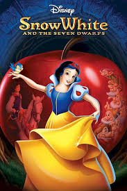

Sneeuwwitje
 7.6 / 10
7.6 / 10
De beste animatiefilm aller tijden
Eeuwig betoverend en inspirerend. Sneeuwwitje en de Zeven Dwergen is de belichaming van de legendarische Walt Disney-animatiecollectie. In dit epische verhaal over liefde en vriendschap wint de vriendelijke en mooie prinses Sneeuwwitje de harten van de Zeven Dwergen en verslaat zij de Boze Koningin. Ontdek de film die de "beste animatiefilm aller tijden" wordt genoemd.
Fun facts
Sneeuwwitje was de allereerste avondvullende animatiefilm in de geschiedenis die volledig met de hand was getekend.
Tijdens de productie noemden critici de film "Disney's Folly" (Disney's Dwaasheid), omdat ze niet geloofden dat mensen 80 minuten naar een getekende film zouden kijken.
Walt Disney kreeg voor deze film één grote Oscar en zeven kleine Oscars (voor de dwergen), een unieke prijs in de geschiedenis van de Academy Awards.